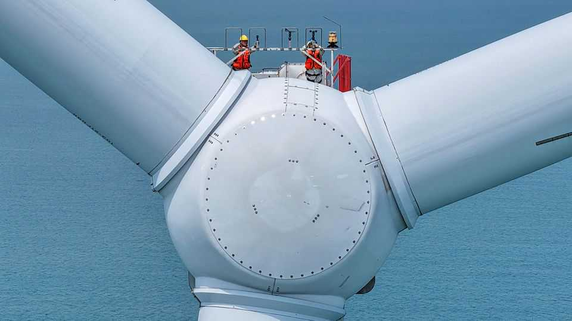

China's emissions are falling. Thank self-interest
And its technology is helping others fight climate change, too

Nov 12th 2026
THE CLIMATE does not care where the carbon dioxide accumulating in the atmosphere comes from. It simply takes note of how much there is and dispenses weather accordingly.
The humans who have to live with that changing weather need to take a slightly more nuanced view. Less carbon dioxide being emitted is good. Less carbon dioxide being emitted because of structural change—change that should decrease emissions further in years to come—is better.
According to the Global Carbon Budget, a consortium that monitors the carbon cycle, carbon-dioxide emissions from fossil fuels will fall by 0.4% in 2026. That compares with an average rise of 0.8% a year over the past seven years. The fall is driven in large part by decreases in Chinese emissions. These, as we report in the China section, have been dropping all year. In the third quarter they fell by 3.1% year-on-year, the largest such fall since the covid lockdowns.
Those assembled in Antalya, Turkey for the UN’s annual climate summit, COP31, would doubtless love to see this happy circumstance as an outcome of their unceasing efforts. Dream on. The principal reason is that the foolhardy war with Iran launched by America and Israel has pumped up the price of oil and natural gas. When fuel becomes more expensive, people burn less of it, and carbon emissions fall.
Normally such changes get reset when prices subside and consumption rebounds. This time that should happen less. If your response to expensive petrol is buying an electric vehicle, rather than driving fewer miles in your existing car, then your need to buy petrol has been cut whether or not it becomes cheap again. And a lot of people are buying EVs, both in China and elsewhere; petrol-powered cars now account for less than half of all new-car sales worldwide.
Another reason for the drop in Chinese emissions is that the generosity with which the state has treated makers of solar panels and wind turbines is paying off. China is getting more and more terawatt-hours from wind and solar, both because more kit has been installed and because grids are better at getting what is generated to where it is wanted. Growth in renewable-electricity generation has outstripped growth in total electricity demand; emissions from coal-fired power are down.
The industrial policy that has made renewables cheap in China has done the same for the world at large—as long as it buys Chinese. Throughout South-East Asia and in much of Africa, Chinese solar panels and batteries are replacing diesel generators and eating into the revenues of national grids. They are also providing the huge advantages of electrified life to people previously denied them—all without adding to emissions.
None of this was done specifically for the benefit of those exposed to the hazards of climate change. The main reasons have been industrial policy, economic policy and a quest for energy independence. Since these motives remain strong, emissions may continue to fall.
To speed up the process, policymakers should amplify the changes already happening and keep up pressure on non-carbon-dioxide emissions. There are some reasons to be careful about importing cheap Chinese clean tech, which include worries about back doors in the software that they rely on. In general, though, if past Chinese subsidies are offering the world technologies to generate cheap power and help with the climate, do not let protectionism spoil a good thing.
Also, governments should do what they can to encourage the switch to electricity. Enabling power prices to vary as much as possible by location and time of day would keep overall costs down. Encouraging the replacement of things which burn fossil fuels—cars, boilers and the like—with technologies that achieve the same goals electrically, such as electric vehicles and heat pumps, is also wise.
Electrification is not the be-all and end-all of climate policy. Making a stable climate possible requires more. Not everything can be plugged in; not all systems can be made entirely fossil-free. A deeply damaging degree of climate change remains plausible. But the clearest path to avoiding it is a world in which the trends driving electrification are given free rein and a following wind. ■